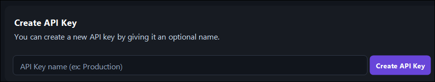
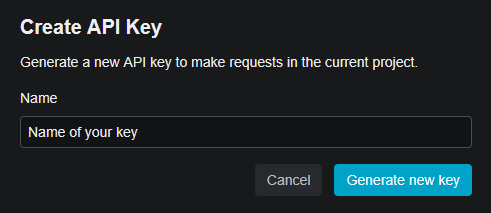
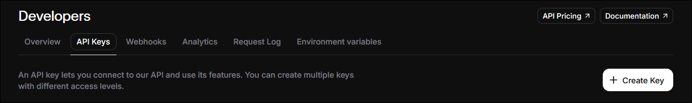
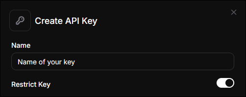
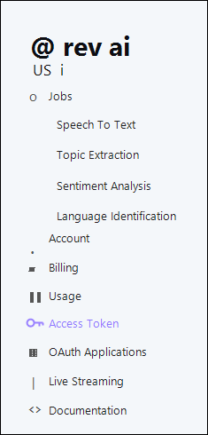

Transcription providers
AssemblyAI
Used for: speech-to-text with word-level timing.
1 Go to https://www.assemblyai.com/dashboard/signup and create an account (email or SSO). No credit card is required; new accounts get roughly $50 in free credits (~330 hours).

2 After verifying your email, open Manage ▸ API Keys in the left sidebar.

3 AssemblyAI creates a Default API Key for the project. You can copy that key, or click Create new API key if you want a dedicated key for SubVox Pro.

4 If you create a new key, give it a recognizable name such as SubVoxPro or your project name, then click Create.

5 Copy the API key from the key row.

6 Paste it into SubVox Pro (Settings ▸ AssemblyAI).
Free accounts are capped at 2 projects / 2 API keys, which is plenty for SubVox Pro. Help article: https://support.assemblyai.com/articles/7562135267-how-to-get-your-api-key
Gladia
Used for: speech-to-text.
1 Sign up at https://app.gladia.io (email or Google).

2 Once logged in, open API Keys in the left sidebar. This is where Gladia lists every key attached to your account.

3 If you want a dedicated key for SubVox Pro, use the creation form and give it a recognizable name
such as SubVoxPro or your project name.

After creation, copy the key from the list. Gladia may shorten the displayed value later, so copy it immediately while you still have access to the full token.

4 Paste it into SubVox Pro (Settings ▸ Gladia).
Free tier: 10 hours of transcription per month (max 20 calls/hour, 3 concurrent). Help: https://support.gladia.io/article/how-to-get-the-api-key-from-my-account
Deepgram
Used for: speech-to-text.
1 Create an account at https://console.deepgram.com/signup — no credit card, and you receive $200 in free credits (they expire one year after signup).

2 In the Console, open API Keys from the left sidebar.

3 Click Create a New API Key.

4 Give the key a recognizable name. For Set expiration, choose whichever duration fits your workflow; SubVox Pro does not require a specific key duration.

5 Copy the generated secret and save it somewhere safe. Deepgram cannot show this secret to you again.

6 Paste it into SubVox Pro (Settings ▸ Deepgram).
Speechmatics
Used for: speech-to-text.
1 Go to the Speechmatics Portal at https://portal.speechmatics.com and create an account. The free plan gives a one-time $100 credit, with no card required.

2 In the project sidebar, open Manage ▸ API Keys.

3 Click Create new key.

4 Give the key a recognizable name, then click Generate new key.

5 Copy the key before closing the dialog. For security reasons, Speechmatics will not display it again.

6 Paste it into SubVox Pro (Settings ▸ Speechmatics).
Docs: https://docs.speechmatics.com/get-started/authentication
ElevenLabs
Used for: speech-to-text (ElevenLabs Scribe) and text-to-speech dubbing.
1 Sign up at https://elevenlabs.io (email or SSO). No credit card needed; the free tier includes a small monthly allowance (~10 minutes). The free plan is non-commercial and requires crediting ElevenLabs: dubbing a game you publish needs a paid plan.

2 Once logged in, open Developers from the left sidebar. This is where ElevenLabs groups API access, logs, webhooks and environment variables.

3 In the Developers page, select the API Keys tab and click Create Key.

4 Give the key a recognizable name. If you enable Restrict Key, make sure Speech to Text and Text to Speech are both set to Access. SubVox Pro uses Scribe for transcription and the Text-to-Speech API when generating dubbed audio.



5 Copy the generated API key before closing the dialog. ElevenLabs only shows the full value once.

6 Paste it into SubVox Pro (Settings ▸ ElevenLabs). The same token is used for ElevenLabs transcription and ElevenLabs TTS dubbing.
API reference: the Text-to-Speech endpoint uses the
xi-api-keyheader and converts text throughPOST /v1/text-to-speech/:voice_id: https://elevenlabs.io/docs/api-reference/text-to-speech/convert
Rev AI
Used for: speech-to-text.
1 Sign up at https://www.rev.ai/auth/signup. No credit card; you get 5 hours of free credits.

2 Go to the Access Token page (https://www.rev.ai/access_token). You can also reach it from the left navigation under Access Token.

3 If no token exists yet, click Generate on the Access Token page. Rev AI allows a maximum of two active tokens at a time.

4 Copy the generated token immediately. Rev AI only shows the full value once; after that, the list keeps only a shortened preview and the creation date.

5 Paste it into SubVox Pro (Settings ▸ Rev AI).